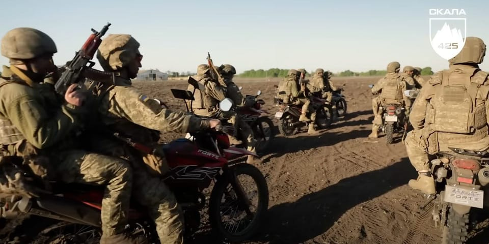

世界苦茶05月23日新闻 | 42条 | 美众议员通过特朗普减税法案

美众议员通过特朗普减税法案 | 比亚迪在欧洲首超特斯拉销量 | 特朗普禁止哈佛招手国际生引发争议 | 比特币突破11万美元 | 菲律宾要求总统总辞职｜呼和浩特育儿补贴似乎有成效
每天三件事：
苦茶数据
美元兑人民币：7.19（昨日7.20，前日7.21）
美元兑日元：143.48（昨日143.02，前日144.07）
上证指数：3379（昨日3380，前日3380）
标普500指数：5842（昨日5844，前日5940）
比特币：110840（昨日111047，前日106341）
布伦特原油：64.02（昨日64.29，前日66.46）
中国新闻
• 中美同意保持沟通 ：美国国务院表示，中美官员同意保持沟通渠道畅通。路透社报道，根据美国国务院星期四发布的一份通话记录，美国副国务卿兰道当天与中国外交部副部长马朝旭通电话，双方一致认为保持沟通渠道畅通非常重要。
• 习近平与马克龙通话 ：中国国家主席习近平与法国总统马克龙通话时说，中国支持欧盟加强战略自主，在国际事务中发挥更重要作用。据中国外交部官网消息，习近平星期四下午应约同马克龙通电话。习近平说，今年是世界反法西斯战争胜利和联合国成立80周年。中法同为联合国安理会常任理事国和独立自主大国，是战后国际秩序的缔造者、建设者，应该加强团结合作，共同维护联合国权威和地位，维护国际贸易规则和世界经济秩序，践行真正的多边主义。 （翻評：法國方面最重要的一句話是：我向其重申，法国有意继续与中国建立强有力的经济关系。为此，法国欢迎中国投资。但我们的企业应在两国享有公平竞争的条件。这是一项基本要点。）
• 呼和浩特育儿补贴见成效 ：“超预期”育儿补贴政策效果初步显现，中国内蒙古自治区呼和浩特市准备迁入户口的人数增加。据《证券时报》报道，截至5月18日，呼和浩特市育儿补贴提交申请2830人，其中一孩1901人，二孩869人，三孩及以上60人，已审核1403人，已发放725人。从市民咨询情况来看，准备把户口迁移至呼和浩特市的人数显著增加。
• 中国专项整治涉企执法 ：中国官方明确涉企行政执法专项行动目标，强调维护企业合法权益，优化营商环境，其中包括重点纠治乱罚款、违规异地执法和趋利性执法等行为。中国国务院新闻办公室星期四举行发布会，介绍规范涉企行政执法专项行动开展情况。据国新网文字直播，中国司法部副部长胡卫列在发布会上说，专项行动将聚焦纠治企业反映最为强烈和集中的四类问题：一是乱收费、乱罚款、乱检查、乱查封行为；二是违规异地执法和趋利性执法行为；三是执法标准不一致、要求不统一，加重企业负担的行为；四是滥用职权、徇私枉法、该罚不罚、“吃拿卡要”、粗暴执法等违反执法规范要求行为。
• 9岁围棋少年疑遭家暴跳楼 ：中国一名9岁围棋少年意外离世，网传因遭父亲家暴跳楼轻生。警方正配合有关部门开展进一步调查。综合中国《南方日报》和网易新闻旗下平台“猫头鹰视频”报道，多个自媒体账号报料称，“年仅9岁的已达到业余6段的围棋手小朱，在受到父亲家暴后坠楼。”同时在多个微信群内，有网友发布消息称，“5月19日晚八点四十六分，经确认：九岁围棋业余6段小朋友跳楼后死亡。生前长期因输棋被父亲极端殴打，选择了轻生。”
• 七省区被查统计造假问题 ：中国国家统计局派督察组对七个省市区和三个国务院部门进行督察后，通报有造假等问题，要求这些地区和部门在三个月内将整改情况反馈国家统计局。国家统计局星期二在官网公布，统计局组建10个督察组，于2024年11月下旬至12月上旬对这些地区和部门开展常规统计督察。国家统计局统计督察组今年5月7日至20日按程序向山西、辽宁、江苏、浙江、海南、重庆、宁夏七个省和科技部、市场监管总局、金融监管总局三个国务院部门反馈了常规统计督察意见。
• 港记协指记者税务遭复查 ：香港记者协会星期三指香港税务局自前年起，复查至少八家新闻机构及20名新闻工作者或其家人的税务，并要求他们支付预缴税款。综合香港《明报》和Yahoo新闻报道，记协称，预缴税额达170万元港元。记协主席郑嘉如是被税务局复查的对象之一。郑嘉如当天在记者会上展示她的报税表时说，18/19年度她任职香港01侦查组记者，月薪1.8万元，年薪为23.4万元，当时税金为约4000元，并在当年缴款，但税务局最近突指她当年薪金实则增加逾两倍，由约23万元增至逾63万，需要郑缴回逾4万元差额。
• 贵州山体滑坡十余人被困 ：中国贵州省大方县果瓦乡庆阳村星期四发生山体滑坡，初步判断有十余人被困。据新华社客户端消息，事件发生在星期四上午9时许。据相关部门，初步判断六栋八户十余人被困。报道还提到，现场山势较高、坡度较大，目前施救难度较大，具体被困人数还在进一步核准中。
• 宜宾纺织厂火灾系人为纵火 ：中国四川宜宾市一家纺织厂星期二发生火灾。据报，事发后有网民称，该纺织厂起火是因为被欠薪员工用汽油将车间布料点燃。该说法目前尚未得到官方回应。宜宾市屏山县公安星期四凌晨在官方微博发布一则警情通报，称屏山县星期二中午12时许发生一起放火案。经查，27岁的犯罪嫌疑人文姓男子，于当日上午前往一纺织厂车间点火引发火情，随后文姓男子被现场处置民警控制。通报说，因车间内棉纺物较多，现场灭火难度大，经全力扑救，现场火势现已得到控制，经排查，火情未造成人员伤亡。犯罪嫌疑人文姓男子已被公安机关刑事拘留。
• 纪录片《歼-10传奇》播出 ：由中国中央广播电视总台华语环球节目中心策划推出的纪录片《歼-10传奇》播出。据中国央视报道，CCTV-4中文国际频道《国家记忆》栏目星期三至星期四播出纪录片《歼-10传奇》。该片以歼-10的研制历程为主线，通过大量历史影像、亲历者口述和专家访谈，全方位、多角度回顾这款中国自主研发的战机诞生背后的故事。 （翻評：內宣動作很快啊。）
亚太印太新闻
• 英叻被判赔百亿泰铢 ：泰国最高行政法院裁定，流亡前首相英叻须为大米收购价补贴制度造成的损失作出赔偿，赔偿金额为100亿泰铢。英叻于2011年至2014年担任泰国首相，她的政府当时推行大米收购价补贴制度，以高于市场价格向农民收购大米，以期刺激米价上涨，保护米农免受中间人压榨。综合《曼谷邮报》和其他外电报道，泰国最高行政法院星期四发布裁决，认定英叻政府的计划导致巨额财政损失，并且扭曲稻米市场，但仅须对大米销售环节造成的损失承担赔偿责任，因为这涉及行政权力的行使。 （翻評：這個是20億人民幣，我覺得基本是不可能賠償的數額。）
• 缅前大使乔吞昂遭暗杀 ：军事消息人士称，前缅甸驻柬埔寨大使乔吞昂遭反军政府武装分子枪杀身亡。法新社报道，一名接近缅军的消息人士透露，乔吞昂星期四上午在仰光的家外向僧侣布施时，遭枪击身亡。这名消息人士说，乔吞昂每天早上都会向僧人捐赠食物，枪手趁此机会暗杀了他。
• 莫迪表示，不让水给巴基斯坦 ：印度总理莫迪说，巴基斯坦不会获得印度拥有权利的河流水资源。路透社报道，新德里在4月22日印控克什米尔恐袭案发生后，暂停与伊斯兰堡的关键河流水资源分配条约《印度河水协定》，至今已有一个月。莫迪星期四访问与巴国接壤的西北部拉贾斯坦邦时表明：“巴基斯坦将为每一起恐怖袭击付出沉重代价……巴基斯坦军队将付出代价，巴基斯坦的经济也是。”
• 印巴再互逐外交官 ：印度外交部星期二将巴基斯坦驻印度高级专员署的一名外交官列为“不受欢迎人物”，限其24小时内离境。巴基斯坦外交部随后也发声明，将一名印度外交人员列为“不受欢迎人物”，限令24小时内离境。印度外交部早在一周前就以从事与官方身份不符的活动为由，驱逐一名巴基斯坦外交官。巴基斯坦当时以驱逐印度外交官作为对等回应，双方互相指控对方从事间谍活动。印度今次以同样原因令另一名巴基斯坦外交官离境，同样招致巴基斯坦对等回应。
• 台国民党主委涉假连署交保 ：继4月24日首波搜索并羁押三名国民党干部，台湾宜兰检调就罢免案“幽灵连署”启动第二波调查，国民党宜兰县党部主委林明昌被约谈后以80万新台币交保。综合台媒《联合报》和《自由时报》报道，林明昌涉幽灵连署，星期三一早7时许被宜兰地检署约谈，经检方漏夜侦讯，星期四凌晨2时许以80万新台币交保。他受访时重申反对假连署，强调自己坦荡荡，清白未做坏事，没有串证、逃避才获保释。
• 小马可斯要求内阁总辞 ：菲律宾总统小马可斯要求所有内阁部长提交辞呈，他的办公室形容此举是一次“大胆的调整”，使总统能够彻底改革政府，以更好地满足公众的期望。小马可斯在总统办公室星期四发表的声明中指出：“这与个人无关，而是关乎表现、协调和紧迫性。”声明指：“那些已经兑现承诺并继续兑现承诺的人将受到认可。但我们不能自满。停留在舒适区的时代已经结束。” （翻評：可見中期選舉結果其實對小馬科斯非常不利。）
• 朝鲜试射巡航导弹 ：韩国军方说，朝鲜星期四上午向东部海域发射了多枚巡航导弹。韩联社报道，韩国联合参谋本部周四说，韩军当天上午9时许发现朝方从咸镜南道宣德一带发射多枚巡航导弹，导弹朝东射出后落入东部海域。韩国联合参谋本部指出，军方当天已提前掌握朝鲜射弹迹象并加强戒备，韩美情报部门正在分析导弹具体参数。
科技新闻
• 四川2030年普及AI教育 ：中国四川省提出，到2027年，全省中小学人工智能教育网络基本形成，到2030年，全省中小学基本普及人工智能教育。据《华西都市报》报道，四川省教育厅印发《四川省推进中小学人工智能教育实施方案》，推动全省中小学人工智能教育体系建设和创新人才培养。工智能教育活动交流平台，遴选人工智能教育校外实践基地，构建人工智能安全伦理规范体系。 （翻評：AI的這個發展速度，2030年還是不是這個教育方式都夠嗆，部署AI方案怎麼可能制定未來5年後的計劃？）
• 比特币突破11万美元 ：比特币价格星期四在亚洲早盘升破11万美元大关，创下历史新高。投资者押注美国加密货币监管政策日趋明朗，加上机构持续进场，进一步提振市场情绪。比特币星期四一度上涨至11万零707美元，涨幅达2.2%，之后略微回落。此前的历史高点出现在今年1月，当时价格一度接近10万7000美元。市场人士指出，随着美国参议院推进稳定币立法，加密资产监管前景改善，成为推高行情的重要利多。此外，持有超过500亿美元比特币的MicroStrategy与其他数字资产公司继续买入，也助长升势。
• 美司法部调查谷歌AI合作案 ：据知情人士透露，美国司法部正在调查谷歌是否因与一家流行聊天机器人制造商达成使用AI技术的协议而违反了反垄断法。知情人士称，反垄断执法机构最近告知谷歌，他们正在调查谷歌是否与 Character.AI 公司达成协议，以避免政府正式的合并审查。在去年与谷歌达成的一项协议中，这家聊天机器人制造商的创始人加入了这家搜索公司，该公司还获得了使用其合资企业技术的非独家许可。谷歌发言人彼得·肖滕菲尔斯在一封电子邮件声明中表示，谷歌“始终乐意回答监管机构的任何问题”。“我们很高兴Character.Ai的人才加入公司，但我们没有所有权股份，他们仍然是一家独立的公司。”
• 人工智能公司Anthropic推出Claude 4模型： 人工智能初创公司Anthropic当地时间周四推出了Claude 4大模型，能够连续工作七个小时，可以像人类一样完成一个几乎完整的工作班次。Claude 4又分为两个版本，分别为Claude Opus 4 和 Claude Sonnet 4。这两个模型的设计都是为了更好地遵循指令，并在处理诸如编写代码和回答复杂问题等任务时更加自主地运行。据介绍，Claude Opus 4是“世界上最好的编码模型”，可以自动工作几乎完整的工作班次——7小时。这两个AI模型都可以帮助用户在网络上搜索信息，并在推理和工具使用之间切换。如果用户允许，还可以读取用户电脑上的文件，找出重要的信息并保存下来，这样就能更好地帮助用户。
财经新闻
• 美众院通过特朗普减税法案 ：美国众议院以微弱优势通过特朗普政府的庞大减税法案，并送交参议院。路透社报道，美国众议院星期四以215票赞成、214票反对的结果，通过特朗普政府的全面税收和支出法案。这项“大而美”的法案将兑现特朗普的许多竞选承诺，例如在小费和汽车贷款领域推出新的税收减免，并增加军事和边境执法方面的支出。
• 长和否认巴拿马交易违法 ：香港长和集团再就巴拿马港口交易发声，重申不会进行不合法交易。综合无线新闻网和网媒“香港01”报道，长和联席董事总经理黎启明星期四在股东周年大会上强调，交易需要经过很多的审查，“我们长和一定会全力配合。在未获得批准之前，我们绝对不会实施”。黎启明也说，公司在5月12日已发声明，并称绝对不会做不合法、不合规的事。
• 中东富裕家族拟增投中国 ：瑞银集团对客户的调查显示，尽管全球贸易战的威胁迫在眉睫，但全球许多富裕的家族办公室仍计划加大在中国的投资。据彭博社报道，这份报告基于317个家族办公室的调查结果，这些办公室平均管理着11亿美元的资产。报告显示，超过三分之一的中东家族办公室计划增加对中国大陆的投资，亚太地区也有39%的家族办公室计划这么做；在全球范围内，平均有此打算的家族办公室比例为18%。但有一个明显的例外。报告显示，占受访者13%的美国家族办公室均称，未来一年不会增加对中国的投资。
• 中国与荷兰外长会谈达成六点共识，同意在半导体技术等领域合作保持密切沟通 ：中国外交部长王毅同荷兰外交大臣费尔德坎普举行会谈，双方同意保持密切交往，深化在经贸、科技、农业、水利等领域务实合作；讨论了双边贸易关切，同意通过现有渠道，就包括半导体技术在内的多领域合作保持密切沟通。
• 美国劳动力市场在5月中旬持稳，未来或受关税拖累而放缓 ：随着企业囤积劳动力，美国上周初请失业金人数有所下降，这暗示5月就业增长保持稳定，但失业者寻找新工作变得愈发困难。劳工部发布的周度初请失业金人数报告显示，鉴于特朗普政策带来的经济不确定性，雇主不愿增加员工人数，失业人数已接近2021年底的水平。截至5月17日当周，初请州政府失业金的人数经季节性调整后下降2000人，至22.7万人。路透调查预测为23万人。
• 比亚迪欧洲销量激增169% 首超特斯拉： 比亚迪在欧洲的电动汽车销量首次超过特斯拉，超越了长期主导该地区电动汽车市场的美国品牌。市场研究机构骏特商务咨询数据显示，比亚迪四月注册了7231辆新纯电动汽车，同比增长169%，使比亚迪跻身电动汽车销量前十品牌。特斯拉注册量暴跌49%，排名下降了一位。骏特商务咨询分析师周四表示：“尽管这两个汽车品牌月度销量总量差距可能很小，但影响却是巨大。这对欧洲汽车市场来说是个分水岭，尤其是考虑到特斯拉多年来一直主导欧洲纯电动车市场。”欧洲电动车全行业注册量增长28%，其中大众汽车四月电动汽车销量同比增长61%。大众汽车集团的斯柯达电动车注册量增长了两倍。
• 参议院投票终止加州的电动汽车强制规定： 共和党领导的参议院周四投票决定，取消加州自行设定汽车尾气排放标准的权力，此举实际上扼杀了美国电动汽车投资的最大驱动力。投票结果为51票赞成，44票反对。此举废除了一项措施，该措施由加州于2022年颁布，后被其他11个州采纳，即禁止在2035年前销售新的汽油动力汽车。众议院已通过同样的废除该措施决议。现在该决议将送交总统特朗普签署。美国汽车制造商和汽车经销商认为，保留该豁免权 —— 该豁免权允许加州制定比联邦政府更严格的排放规定 —— 可能会重创汽车行业，从而迫使汽车行业销售大量公众不想要的汽车。
俄乌战争
• G7寻求解决全球经济“过度失衡”问题，或降低俄罗斯石油价格上限 ：根据公报草案和欧盟执委会的消息，七国集团财长和央行总裁周四承诺解决全球经济“过度失衡”问题，并讨论将G7对俄罗斯原油出口的价格上限降低至每桶50美元。据路透看到的公报部分内容，各国财长和央行总裁表示，需要对“非市场政策和做法”如何破坏国际经济安全有一个统一的认识。草案摘录中没有提到中国，但美国和其他G7经济体提到的“非市场政策和做法”往往是针对中国的政府补贴和出口驱动型经济模式。加拿大财长商鹏飞表示，关税问题确实在G7财长会议上被讨论，尽管在最终发布的公报中未提到这一问题。一名欧洲官员表示，美国“尚未被说服”接受G7提出的下调俄罗斯原油价格上限的提议。
• 欧盟对俄制裁名单包括中国企业，中国驻欧盟使团：已向欧方提出严正交涉 ：欧盟对俄罗斯实施新的制裁中将中国企业列入清单，中国驻欧盟使团发言人表示，对欧方无理制裁中国企业表示强烈不满、坚决反对，并已向欧方提出严正交涉。欧盟的制裁名单中包括六家中国企业：三家提供高科技机床，三家提供无人机等关键零部件。
• 《华尔街日报》称特朗普私下告诉欧洲领导人普京不准备结束战争： 据《华尔街日报》周三报道，美国总统唐纳德·特朗普在周一的电话通话中告诉欧洲领导人，弗拉基米尔·普京无意结束乌克兰战争，因为他认为自己正在"获胜"。据《华尔街日报》援引三位了解谈话内容的匿名消息人士称，特朗普在与乌克兰总统弗拉基米尔·泽连斯基、法国总统埃马纽埃尔·马克龙、德国总理弗里德里希·默茨、意大利总理乔治娅·梅洛尼和欧盟委员会主席乌尔苏拉·冯德莱恩通话时承认了这一点。这次通话发生在周一，就在他当天早些时候与普京通话之后不久。然而，《华尔街日报》表示，虽然特朗普现在承认了欧洲领导人对普京"长期以来的看法"，但他仍不愿意因莫斯科拒绝同意停火而对俄罗斯实施进一步制裁，反而倾向于"迅速推进低级别谈判"，即由梵蒂冈主持的俄罗斯和乌克兰之间的会谈，这些谈判可能在6月中旬开始。
其他新闻
• 内坦亚胡否认与特朗普不和 ：以色列总理内坦亚胡周三驳斥与美国特朗普政府不和的传闻。美国总统特朗普的中东之行刻意绕过以色列，被部分舆论解读为“冷落”以色列。内坦亚胡此前没有就此事公开发表评论。他星期三在新闻发布会上告诉记者，大约10天前与特朗普进行过交谈，特朗普告诉他，“无论是对你还是以色列，我都将履行承诺。”
• 以总理加强大使馆安保 ：以色列总理内坦亚胡在华盛顿特区犹太博物馆外发生致命枪击事件后说，将加强世界各地以色列大使馆的安保措施。华盛顿特区的犹太博物馆外星期三发生枪击事件，造成两名以色列使馆人员丧命。美国官员说，两名遇难者是一对即将订婚的年轻夫妇，他们是在博物馆参加完活动准备离开时被一名枪手杀害。警方确认，犯罪嫌疑人为30岁的埃利亚斯·罗德里格斯，来自伊利诺伊州芝加哥。
• 内塔尼亚胡将实施特朗普的加沙迁移计划设为结束战争的新条件： 在五个月来的首次新闻发布会上，总理本雅明·内塔尼亚胡周三将实施美国总统唐纳德·特朗普"革命性"的加沙平民迁移计划列为结束冲突的条件，这是他首次提出这样的要求。他称特朗普的计划"出色"，并表示它有可能改变中东的面貌。这位总理在耶路撒冷总理办公室对记者和现场电视摄像机表示，刚刚兴起的"基甸战车行动"——以色列国防军周末开始在加沙展开的扩大地面行动——旨在"完成战争，完成工作"。他坚持说，以色列有一个"非常有组织的"计划来实现其在加沙的战争目标，并表示其目标是"击败实施10月7日暴行的哈马斯；带回我们所有的人质；确保加沙不再对以色列构成威胁。"
• 土耳其总统埃尔多安称他"无意寻求连任"： 土耳其总统雷杰普·塔伊普·埃尔多安周四表示，他无意寻求连任总统。据国家通讯社阿纳多卢报道，埃尔多安在访问匈牙利后在飞机上对记者说："我们希望新宪法不是为了我们自己，而是为了我们的国家。我无意寻求连任或再次成为候选人。"这位71岁的土耳其领导人在推动修改国家宪法时发表了这些言论，他希望创建一个他所描述的"文民"框架，而不是"由政变策划者撰写的"框架。
• 德国军队自二战以来首次在另一个国家开始长期部署： 一个德国旅已在立陶宛开始行动，立陶宛是一个与俄罗斯部分地区接壤的北约国家。这是德国自二战以来首次在另一个国家长期部署军队。两国都将此描述为保护欧洲和北约的一步。
• CIA总部外发生枪击 ：美国中央情报局的安保人员在总部大楼外向一人射击，中情局称系两人发生冲突，遭袭者已被拘留。据美国广播公司和美国全国广播公司（NBC）报道，当地时间星期四凌晨4时，弗吉尼亚州费尔法克斯县中情局总部大楼的一名安全人员开枪击中一人，但并未致其死亡。中情局称这是一起安全事件，一名安全人员在主大门外与一人发生冲突，并将后者拘留。中情局的总部大楼已经关闭。
• 英国净移民人数骤减 ：英国官方数据显示，2024年英国长期净移民人数较上年同期下降近一半，主要原因是持工作和学习签证入境人数减少。路透社报道，英国国家统计局星期四发布的数据显示，英国净移民人数去年已降至43万1000人，而2023年12月前的数字为86万人。誓要大幅减少移民的工党政府或许能松一口气。统计局说，净移民人数锐减主要是因为“非欧盟+国家”的移民人数减少，与此同时，2024年英国出境的移民人数有所增加，尤其是当初持学签入境、在英国疫情旅行限制放宽后离境的人。
• 美伊将举行第五轮会谈 ：阿曼外长巴德尔说，美国和伊朗将于星期五在意大利首都罗马举行第五轮会谈。巴德尔没有提及其他相关细节。美国与伊朗在阿曼斡旋下，从4月12日起连续四个周末就核问题举行间接谈判，虽有进展，但双方仍存关键分歧。
• 哈佛被禁招国际生惹争议 ：5月22日，美国特朗普政府宣布撤销哈佛大学的“学生与交流访问学者项目”认证，禁止其继续招收国际学生。禁令要求在读学生转学，否则将失去合法身份，不过此项已被法庭暂时处分失效。国土安全部长克里斯蒂·诺姆下令终止认证，原因是哈佛大学在4月拒绝提供其部门要求的一系列学生详细记录。诺姆在声明中表示，大学招收外国学生是“特权，而非权利”，并指责高校借助国际学生的高额学费来“填补数十亿美元的捐赠基金”。哈佛大学回应称，此举违法且具有报复性质，对哈佛社区乃至国家构成严重伤害，破坏其学术和研究使命。校方承诺将全力支持受影响的学生，并正在为他们提供指导意见。哈佛表示，将继续致力于为国际学生提供教育。2024-25学年，哈佛共有约6800名国际学生，占总注册人数的27%。此次政策被认为是特朗普政府针对该校持续行动的升级之一。特朗普曾多次批评哈佛招募民主党人担任教职和领导职务，并指其传播“反美”、“马克思主义”以及“激进左翼”意识形态。
• 澳暴雨成灾5万人受困 ：澳大利亚东部新南威尔士州星期四连续第二天遭暴雨袭击，河水暴涨吞没道路，有近5万人被困。洪水已导致二人丧命，三人失踪，100多所学校关闭，数千户家庭失去电力供应。当局出动约2500名人员、救援船队、直升机和数百架搜救无人机前往灾区救援。
• 英拟强制对性罪犯化学阉割 ：英国正在考虑强制对性犯罪者实施化学阉割，以缓解监狱人满为患的问题。路透社星期四报道，英国工党政府准备对司法系统进行改革，此前宣布计划提前释放更多囚犯，以应对监狱满员危机。政府官员说，监狱容纳能力方面的压力可能导致法律和秩序全面崩溃。司法部长马哈茂德公布《独立量刑审查报告》发现时说，审查建议继续试行药物控制性冲动措施。她正在探索是否有可能强制实施这一方法。